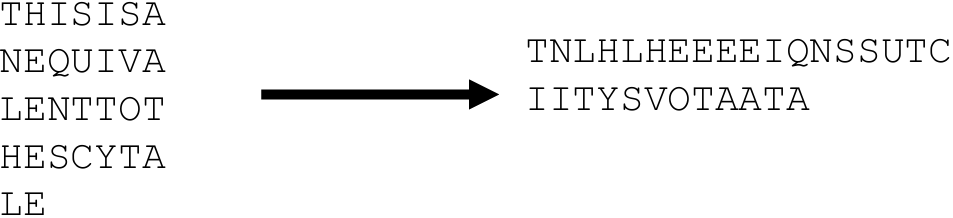
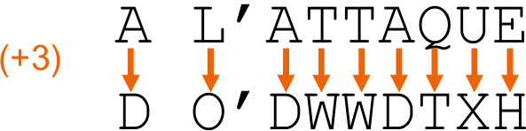
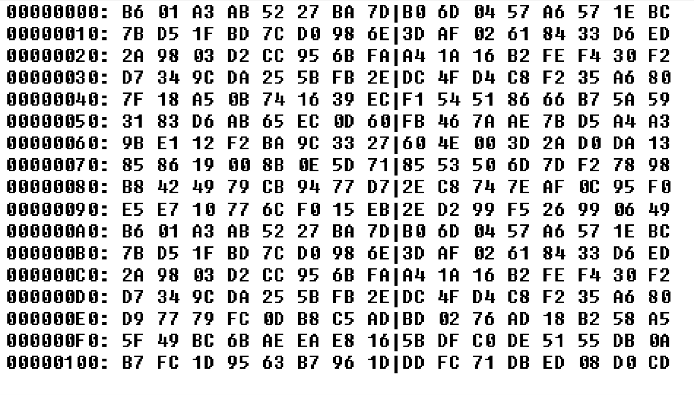
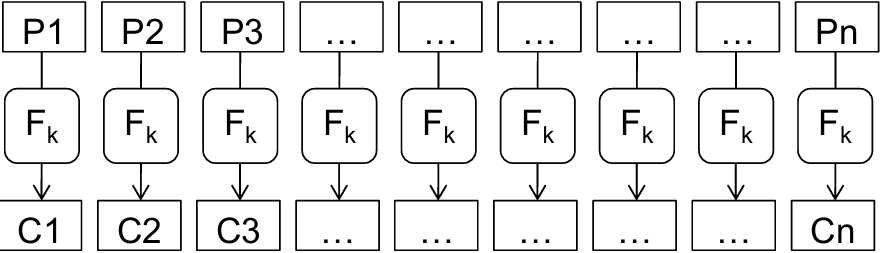
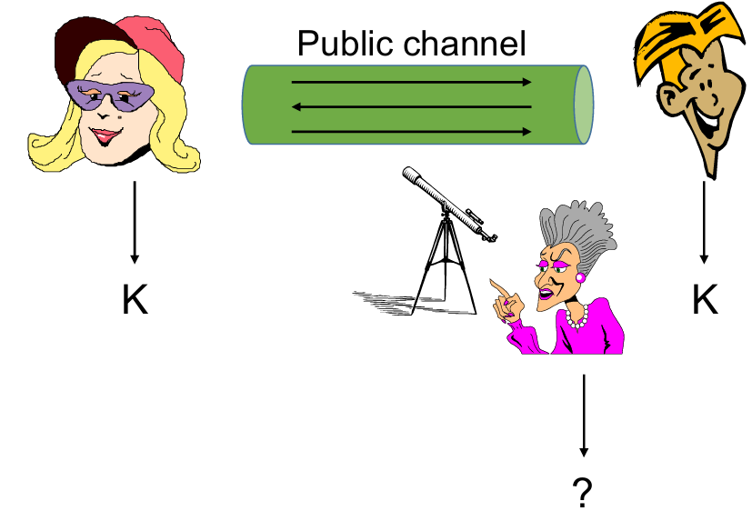
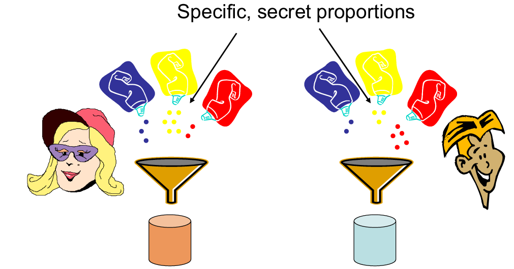
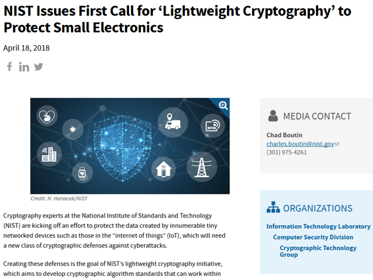
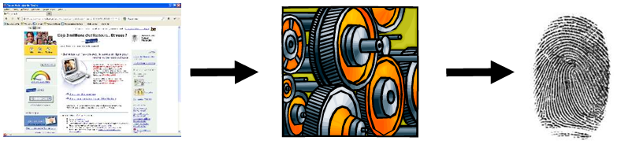
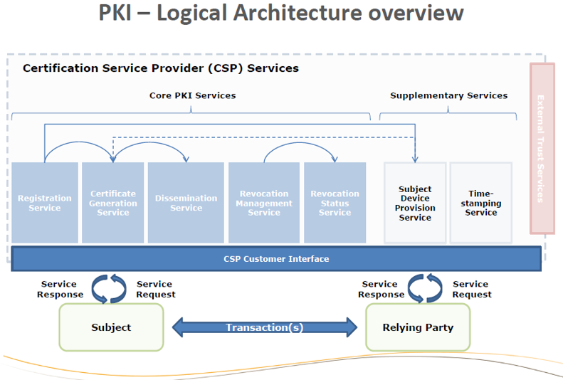

Introduction à la cryptographie :
Claude Elwood Shannon
(1916-2001)
Claude Shannon est l'un des fondateurs de la cryptographie moderne. Ses travaux ont posé les bases théoriques de la sécurité de l'information, encore utilisées aujourd'hui.
Claude Elwood Shannon
(1916-2001)
Claude Shannon est l'un des fondateurs de la cryptographie moderne. Ses travaux ont posé les bases théoriques de la sécurité de l'information, encore utilisées aujourd'hui.
Aperçu des principaux outils cryptographiques modernes :
Chiffrement
Codes d'authentification des messages (MAC - Message Authentication Codes)
Signature
PKI
...
Approche descendante à partir d'exemples concrets :
Approche fonctionnelle
Comment ça marche
Ce qu'il fait
Je ne vais pas vous transformer en cryptographes en quelques heures !
C'est la science de la sécurité de l'information.
Confidentialité
L'intégrité des données
Authentification de l'entité
Authentification de l'origine des données
La cryptographie est la science de la sécurité de l'information et elle se divise en deux disciplines :
La cryptographie se concentre sur la conception de primitives (chiffrement, signature, etc.).
La cryptanalyse, quant à elle, s'occupe de l'analyse de la sécurité de ces primitives, notamment en recherchant des failles et en développant des attaques.
Authentification/contrôle d'accès
Cryptage
Signature numérique
Commerce électronique
... et bien plus encore
Sparte, 400 avant JC
Un ruban est enroulé autour d'un bâton.
Le message est écrit sur le ruban.
Le ruban est déroulé et remis au messager.
Pour décrypter, il faut un bâton du même diamètre (= clé).
Cette illustration montre le principe de la scytale, l'un des premiers dispositifs de chiffrements connus. Le message devient incompréhensible dès que le ruban est déroulé, sauf pour une personne possédant un bâton de diamètre identique.
Cela équivaut à :
Écrire un texte en lignes de taille fixe
Le transposer en colonnes
Clé = largeur de ligne
Il s'agit d'un chiffrage de transposition : les symboles sont déplacés, mais leur valeur ne change pas.
Bien sûr, assez facile à casser.
Chaque lettre du message est remplacée par celle située x places plus loin dans l'alphabet.
Exemple : x = 3.
Cette image illustre le chiffrement de César, où chaque lettre du message est décalée d'un nombre fixe de positions dans l'alphabet.
Il s'agit d'un chiffrement de substitution : les symboles sont remplacés selon une certaine transformation, mais leur position ne change pas.
La transposition et la substitution sont toujours au coeur des chiffrements symétriques modernes.
Répétez 16 fois.
Il s'agit de la norme de cryptage des données (DES - Data Encryption Standard).
C'est un dictionnaire (secret) contenant un (ou plusieurs) mot(s) de remplacement pour chaque mot en clair.
Si le livre est pris par des ennemis, les secrets sont perdus.
Si le même mot de remplacement est utilisé trop souvent, une analyse de fréquence devient possible.
Remarque : des variantes étaient encore utilisées pendant la Seconde Guerre mondiale (par exemple : code Navajo).


Cette image met en évidence l'importance stratégique de la cryptographie au XXème siècle, notamment durant les conflits mondiaux. Les machines comme Enigma ont profondément influencé l'évolution des techniques crytographiques modernes.
Ce schéma illustre l'utilisation concrète de la cryptographie moderne dans les communications sécurisées. Il montre comment le chiffrement, l'authentification et l'intégrité sont combinés pour protéger les échanges sur Internet.

https://... → HTTP Secure
Ce document provient bien de fgov.be.
Son contenu n'a pas été modifié.
Confidentialité : Personne ne peut lire les données pendant leur transmission.
PKCS #1 SHA-1 - RSA

Une norme cryptographique publique.
Tous les détails sur les opérations effectuées sont disponibles sur le web.
Ce caractère public ne limite-t-il pas d'une manière ou d'une autre la sécurité ?
L'attaquant connaît tous les détails de l'algorithme.
Seule la clé est inconnue.

Ce schéma représente l'hypothèse de Kerckhoffs, selon laquelle la sécurité d'un système cryptographique ne repose pas sur le secret de l'algorithme, mais uniquement sur la confidentialité de la clé.
On suppose que l'attaquant connaît tous les détails de l'algorithme.
Ce principe est fondamental car il permet la création de standards publics et ouverts, comme RSA ou AES, qui peuvent être analysés par la communauté scientifique pour garantir leur robustesse.
Peut-on parvenir à un cryptage parfait ? Oui.
Shannon : one-time pad.
Ces schémas expliquent le fonctionnement du one-time pad, un chiffrement théoriquement parfait. Chaque bit du message est combiné avec un bit de clé totalement aléatoire et utilisé une seule fois.
Peu importe :
la puissance de calcul
la quantité de données interceptées
la technique utilisée
Il est impossible d'obtenir la moindre information sur le message (sauf sa longueur).
→ Sécurité théorique de l'information.
Mais la clé doit être :
vraiment aléatoire
utilisée une seule fois (longueur > quantité totale de données)
échangée de manière totalement fiable
stockée dans un endroit parfaitement sûr
→ Impossible d'appliquer en pratique.
→ Nous devrons baisser nos critères :
Limiter la puissance de l'adversaire : sécurité informatique.
Abaisser la définition de sécurité (par exemple : attaque possible, mais avec une très faible probabilité).
Si nous voulons avoir une chance de construire des systèmes sécurisés, nous devons au moins trouver une définition solide de la sécurité.
Pouvons-nous nous mettre d'accord sur une définition claire, formelle et sans ambiguïté ?
→ Essayons.
Étant donné un texte chiffré, aucun adversaire ne devrait être en mesure de récupérer la clé.
Étant donné un texte chiffré, aucun adversaire ne devrait être en mesure de récupérer le texte en clair.
Étant donné un texte chiffré, aucun adversaire ne devrait être capable de récupérer un caractère du texte en clair.
Étant donné un texte chiffré, aucun adversaire ne devrait être en mesure de récupérer des informations sur le texte en clair.
L'adversaire peut demander le cryptage de nombreux messages : m0, ..., mn.
L'adversaire construit alors deux messages : m'0 et m'1.
L'un d'eux est choisi, crypté et restitué à l'adversaire.
Encore une fois, l'adversaire peut demander le cryptage de nombreux messages : m"0, ..., m"n.
L'adversaire devine lequel de m'0 ou de m'1 a été renvoyé.
Un système est considéré comme sécurisé si nous pouvons prouver que :
Il ne peut exister un tel adversaire avec une puissance de calcul "limitée" (avec une définition précise).
Réussir avec une probabilité non négligeable.
Remarque : Ceci n'est qu'un exemple de définition de sécurité : de nombreuses variantes existent.
Un adversaire ne devrait pas pouvoir dire quoi que ce soit sur la signification d'un message chiffré.
Pas même le fait que le même message ait été observé auparavant !
→ Le cryptage doit donc être probabiliste.
Le même message, chiffré plusieurs fois, avec la même clé, donne des textes chiffrés différents.
Le cryptage symétrique est basé sur une clé secrète partagée et permet :
Transformation du texte brut en texte chiffré (chiffrement)
Récupération du texte brut à partir du texte chiffré (déchiffrement)
L'adversaire ignorant la clé ne peut récupérer aucune information sur le message (sauf sa taille).
Bien entendu, la même clé peut être utilisée pour transmettre un grand nombre de messages.
Schémas basés sur des chiffrements par blocs.
(ou alternativement, des chiffrements de flux)
Un composant d'un système de chiffrement symétrique :
Paramètre avec une clé
Traite des blocs de données de taille fixe
Quelques exemples bien connus :
DES (ancien)
AES
Twofish
Serpent
Cette illustration montre le fonctionnement général d'un chiffrement par blocs. Le message est découpé en blocs de taille fixe, chacun étant transformé par l'algorithme à l'aide d'une clé secrète.
OpenSSL est une boîte à outils de chiffrement comportant deux bibliothèques, libcrypto et libssl, fournissant respectivement une implémentation des algorithmes cryptographiques et du protocole de communication SSL/TLS, ainsi qu'une interface en ligne de commande, openssl. Développée en C, OpenSSL est disponible sur les principaux systèmes d'exploitation et dispose de nombreux wrappers ce qui la rend utilisable dans une grande variété de langages informatiques.
Commencez, au choix, par :
Installer OpenSSL sur votre PC. Attention cependant : l'étape in the User variables section, select Path and click Edit
n'est pas 100% claire : veillez bien à ajouter une nouvelle ligne au path.
Alternativement,vous pouvez utiliser un émulateur d'OpenSSL.
Créez un fichier "texte_clair.txt" et écrivez-y un message, puis chiffrez-le au moyen de la commande (à taper en une ligne) :
openssl enc -e -aes-128-ecb -in texte_clair.txt -out texte_chiffre.enc -K 0102030405060708090A0B0C0D0E0F00
La commande ci-dessus n'est PAS une bonne pratique, comme nous allons le voir.
À quoi correspondent les paramètres -e, -in, -out, -K ? (nous reviendrons sur -aes-128-ecb plus tard)
-e → encrypt : chiffrement.
-in texte_clair.txt : fichier d'entrée (texte clair).
-out texte_chiffre.enc : fichier chiffré en sortie.
-K KEY : clé en hexadécimal donnée manuellement.
Quelle est la taille de clé utilisée ?
La clé 0102030405060708090A0B0C0D0E0F00 contient 32 caractères hexadécimaux, soit 128 bits (car 2 hex = 1 octet = 8 bits).
Réponse : clé AES-128 bits.
Comment déchiffrer le fichier ainsi produit ?
openssl enc -d -aes-128-ecb -in texte_chiffre.enc -out texte_dechiffre.txt -K 0102030405060708090A0B0C0D0E0F00L'option -d (decrypt) permet de déchiffrer.
Essayez de chiffrer/déchiffrer un fichier avec une clé de 256 bits.
Il suffit d'utiliser AES-256-ECB pour chiffrer/déchiffrer :
openssl enc -e -aes-256-ecb -in texte.txt -out texte.enc -K <clé 64 hex>openssl enc -d -aes-256-ecb -in texte.enc -out texte_dechiffre.txt -K <clé 64 hex>64 hex = 256 bits.
Chiffrez le texte suivant (attention à le copier exactement) :
ANTICONSTITUTIONNELLEMENT EST LE PLUS LONG MOT DE LA LANGUE FRANCAISE, MAIS, QUAND ON Y REFLECHIT, CE MOT N'EST GUERE UTILISE QUE JUSTEMENT DANS CETTE PHRASE: <ANTICONSTITUTIONNELLEMENT EST LE PLUS LONG MOT DE LA LANGUE FRANCAISE>. C'EST UN PEU ABSURDE...Observez attentivement le fichier chiffré (ce sera sans doute plus aisé avec un éditeur hexadécimal, comme par exemple https://hexed.it/). Que constatez-vous ? Essayez de reproduire le phénomène avec d'autres textes.
Les blocs identiques donnent des blocs chiffrés identiques.
Donc on voit des répétitions évidentes dans l'hexadécimal.
C'est une fuite d'information !
Ceci est-il quelque chose que l'on attendrait d'un bon système de chiffrement ?
ECB = pas sûr du tout, car il n'utilise pas d'aléa.
Ce n'est PAS ce qu'on attend d'un bon chiffrement.
Chiffrez plusieurs fois le même fichier avec la même clé, et comparez les résultats.
À nouveau, ceci est-il quelque chose que l'on peut attendre d'un bon système de chiffrement ?
Le résultat sera strictement identique à chaque fois.
C'est une faille grave : un attaquant voit les répétitions.
Ce constat va nous permettre d'introduire un concept très important en matière de block ciphers : les modes d'opération.
Les chiffrements par blocs fonctionnent par blocs.
Les blocs de texte en clair donnent les mêmes blocs de texte chiffré.
La détection de patterns est possible.
Nous ne pouvons pas accepter cela : la qualité du cryptage ne doit pas dépendre de la structure du texte en clair.
Les modes d'opération définissent comment enchaîner les blocs pour chiffrer un message long.
→ Les modes d'opération peuvent résoudre le problème.
Cette image illustre la principale faiblesse du mode ECB : les motifs du message original restent visibles après chiffrement, révélant ainsi des informations sensibles.
Le principe de ECB (Electronic Codebook) est que chaque bloc est chiffré indépendamment. Le même bloc clair donne le même bloc chiffré.
Les avantages sont :
Simple
Rapide
Les inconvénients (graves) sont :
Révèle les motifs du message
Aucune sécurité sémantique
→ Jamais utilisé en pratique.
Ce schéma présente le fonctionnement du mode CBC, où chaque bloc dépend du précédent, ce qui empêche la répétition visible des motifs observée avec ECB.
Le principe de CBC (Cipher Block Chaining) est que chaque bloc clair est XORé avec le bloc chiffré précédent. Il utilise un IV (Initialization Vector).
Les avantages sont :
Cache les motifs
Simple
Les inconvénients sont :
Pas d'authentification
Vulnérable aux padding oracle attacks
→ Encore courant mais remplacé par AEAD (AuthenticatedEncryption with Associated Data). Pas d'intégrité, vulnérable à certaines attaques.
C'est un "paramètre de diversification", garantissant que les messages avec le même en-tête et ne génèrent pas le même texte chiffré.
Il est généralement transmis avec un texte chiffré.
→ Il n'a pas besoin d'être secret.
Mais il doit changer à chaque fois et doit être imprévisible.
Le principe de CTR (Counter Mode) est de chiffrer un compteur (nonce + compteur). Il fait un XOR avec le texte clair.
Les avantages sont :
Très rapide
Parallélisable
Pas de padding
Les inconvénients sont :
Aucune authentification
Nonce jamais réutilisable
→ Très utilisé avec une authentification séparée. Pas d'intégrité.
Un nonce (Number Once) est une valeur :
unique
utilisée une seule fois
non secrète
→ Son rôle principal est d'empêcher les réutilisations, les rejeux et les répétitions dans les protocoles cryptographiques.
Le principe de CFB (Cipher Feedback) est de transformer un block cipher en chiffrement par flot (stream cipher), une des deux catégories du chiffrement symétrique, et de chiffrer des données bit par bit ou octet par octet.
Les avantages sont :
Pas besoin de padding
Les inconvénients sont :
Plus lent
Pas authentifié
→ Plus lent, peu utilisé aujourd'hui.
Le principe de OFB (Output Feedback) est de générer un flot pseudo-aléatoire indépendant du message et de faire un XOR avec le texte clair.
Les avantages sont :
Pas de propagation d'erreur
Pas de padding
Les avantages sont :
Réutilisation du IV catastrophique
→ Sensible à la réutilisation de l'IV.
Basé sur CTR
Fournit confidentialité + intégrité + authenticité
✓ Très sécurisé
✓ Très utilisé (TLS, HTTP)
Certains modes (CTR, OFB, CFB) transforment un block cipher en stream cipher utilisant un flot de clés généré à partir du bloc chiffré.
Un block cipher chiffre des blocs fixes et nécessite un mode d'opération pour sécuriser des messages longs, tandis qu'un stream cipher chiffre un flux continu de données. Les modes modernes comme AES-GCM assurent à la fois confidentialité et intégrité.
Il assure la confidentialité des données sur la base d'une clé secrète partagée.
Il est défini par :
Un chiffrement par bloc (AES, Twofish, Serpent, ... Mais pas DES !)
Un mode d'opération (CBC, OFB, CFB, ... Mais pas ECB !)
Il utilise une norme et l'utilise exactement comme décrit.
Tentez à nouveau de chiffrer différents fichiers, en utilisant cette fois un mode d'opération tel que AES-CBC ou AES-CTR.
Comment résoudre le message d'erreur "iv undefined" ?
Parce que CBC/CTR ont besoin d'un IV (vecteur d'initialisation).
On doit donc ajouter :
-iv <IV en hex>Par exemple :
openssl enc -e -aes-128-cbc -in texte.txt -out texte.enc -K <clé> -iv 000102030405060708090A0B0C0D0E0FLes problèmes ci-dessus se manifestent-ils à nouveau ?
Non les problèmes précédents disparaissent.
CBC masque les répétitions grâce à l'IV.
CTR transforme AES en flux cryptographique.
→ Les motifs ne réapparaissent plus.
Que se passe-t-il si on chiffre plusieurs fois le même fichier avec la même clé et le même IV ? Lequel de ces paramètres doit-il impérativement changer à chaque nouveau chiffrement ?
On retrouve le même résultat, comme en ECB.
⚠ Interdit en cryptographie.
Note : la documentation (imparfaite) relative au chiffrement symétrique sous openssl.
L'IV doit obligatoirement changer.
La clé peut être réutilisée (dans certaines limites), l'IV jamais.
Testez l'outil de benchmarking : quel est le débit du chiffrement AES sur votre machine ?
Cela dépend de ton CPU. Typiquement :
1 GB/s (anciens)
3-5 GB/s (modernes Intel/AMD)
8-10 GB/s (AES-NI)
Créez un volume chiffré ("encrypted file container, standard").
Pourquoi faut-il bouger la souris durant la création ?
Pour récolter de l'entropie (aléa) utilisée pour générer :
la clé maîtresse
les algorithmes internes
Plus tu bouges, plus l'aléa est bon → meilleure sécurité.
Essayez de monter le volume, d'y ajouter des fichiers, de le démonter...
Pourquoi le montage est-il si lent, alors que les benchmarks sont excellents ?
Parce que VeraCrypt doit :
dériver ta clé (fonction très lente de type PBKDF2)
vérifier l'en-tête du volume
D'où la lenteur → c'est normal.
Que se passe-t-il si le mot de passe est incorrect ?
VeraCrypt prétend juste que le volume est invalide.
Il ne dit jamais "mauvais mot de passe". C'est volontaire pour ne donner aucune information à un attaquant.
Un volume VeraCrypt doit-il obligatoirement porter l'extension .hc ? Pourquoi ?
Non car un volume VeraCrypt peut avoir :
.hc
.dat
.bin
ou aucune extension
L'extension sert juste pour l'utilisateur.
Que se passera-t-il si vous oubliez votre mot de passe ?
→ Perte définitive des données.
Il n'y a aucun moyen de récupérer le volume.
D'accord, alors...
Nous avons essentiellement résolu le problème de confidentialité, à condition que les deux parties partagent une clé secrète.
Comment peuvent-elles obtenir un tel secret ?
Fondamentalement, il existe deux options :
Trouver un moyen de le transmettre : le cryptage asymétrique.
La construire ensemble : les protocoles d'accord de clé.
Deux clés par utilisateur : une privée et une publique.
La clé publique permet uniquement de chiffrer les messages.
Pour envoyer un message à quelqu'un :
Obtenez sa clé publique (par exemple : à partir d'un repository)
Utilisez-la pour chiffrer le message
Vous l'utilisez tous les jours, même si vous ne le savez pas.
Supposons qu'il soit 11h00. Quelle heure sera-t-il dans 26 heures ?
37h00 ? → mmm... non.
L'heure sera de 13h00.
Mais comment est-on arrivé à ce résultat ?
Il n'y a que 24 heures dans une journée, puis on recommence.
Lorsque le résultat est supérieur à 24, soustrayez 24.
C'est de l'arithmétique modulaire (modulo 24).
Considérons uniquement l'ensemble des entiers.
Divisez-le en intervalles de taille 24.
Deux valeurs sont dites égales si elles correspondent à la même position dans un intervalle.
Autrement dit, si leur différence est un multiple de 24.
Soit n, a, b des nombres entiers :
Congruence : a ≡ b mod n ⇔ n | (a-b)
On note Zn les entiers modulo n.
Les opérations arithmétiques classiques peuvent être transférées vers Zn, par exemple :
11 * (7 + 12) ≡ 11 * 7 + 11 * 12 ≡ 4 ≡ 11 * 2 + 1 * 12 (mod 5)
De nombreux algorithmes cryptographiques sont basés sur des entiers arithmétiques modulo grands (disons 2048 bits).
Pratiquons un peu...
9 + 5 (mod 10)
≡ 14 (mod 10)
≡ 4 (mod 10)
or
9 * 5 (mod 7) ≡ 2 * 5 (mod 7)
≡ 45 (mod 7) ≡ 10 (mod 7)
≡ 3 (mod 7) ≡ 3 (mod 7)
On essaie ?
8 * 7 + 17 * (2 + 8) + 112 (mod 6)
≡ 2 * 1 + 5 * (2 + 2) + 112 (mod 6)
≡ 2 + 20 + 121 (mod 6)
≡ 2 + 2 + 1 (mod 6)
≡ 5 (mod 6)
6 * 5 + 11 * 31 + 2 * 9 (mod 5)
a est premier à n si pgcd(a,n) = 1.
Fonction totiente d'Euler : φ(n) = # { i <= n | gcd(i,n) = 1}
En particulier :
Pour un p premier : φ(p) = p - 1
Pour p, q premiers, n : φ(n) = (p - 1) * (q - 1)
Si pgcd(a,n) = 1, alors aφ(n) ≡ 1 (mod n)
Choisissez deux grands nombres premiers p, q (disons, 1024 bits).
Calculez n = p * q.
Choisissez d <= φ(n).
Calculez e = d-1
(⇔e * d = 1 mod φ(n)
⇔ e * d = k * φ(n)+1)
Si p, q peuvent êre récupérés à partir de n, alors RSA est rompu.
C'est ce qu'on appelle le problème de factorisation qui est considéré comme étant difficile.
Plusieurs schémas de cryptage ont été conçus dont le plus connu est le RSA.
Sécurité basée sur l'hypothèse qu'un problème mathématique donné est difficile.
Factorisation du produit de deux grands nombres premiers.
Calculer le logarithme discret d'un nombre dans un groupe.
Cryptographie asymétrique :
Aucun problème de transmission de clé.
Beaucoup plus lent.
Habituellement, un système hybride est utilisé :
Transmettre une clé de session par crypto asymétrique.
Transmettre des données par crypto symétrique.
Attention : ne comparez pas les tailles de clés symétriques et asymétriques !
OpenSSL, que nous avons déjà utilisé, supporte également le chiffrement asymétrique. Le but de cet exercice est d'en manipuler quelques exemples, sans nullement prétendre en couvrir toute la documentation. Pour plus d'infos.
Générez une paire de clés RSA au moyen de la commande suivante (en remplaçant XY par vos initiales) :
openssl genpkey -algorithm RSA -out rsa_PrivAndPub_XY.pem -pkeyopt rsa_keygen_bits:4096 -aes-128-cbcL'option -aes-128-cbc permet de chiffrer le fichier contenant les clés. La clé de chiffrement AES est dérivée d'un mot de passe qui vous est demandé à l'exécution de la commande.
À quoi servent les autres options ?
openssl genpkey : utilitaire d'OpenSSL pour générer des clés privées (remplace genrsa dans les versions récentes).
-algorithm RSA : on demande une clé RSA.
-out rsa_PrivAndPub_XY.pem : fichier de sortie contenant la clé privée (ici protégé par mot de passe et encodé en PEM).
-pkeyopt rsa_keygen_bits:4096 : taille de la clé → 4096 bits (sécurité élevée).
-aes-128-cbc : chiffre la clé privée sur disque avec AES-128-CBC. OpenSSL demandera une passphrase. Important : si tu oublies la passphrase, tu perds la clé privée.
Remarque : le fichier créé contient uniquement la clé privée (dans un format PEM chiffré). Il ne contient pas automatiquement la clé publique séparée.
Il est maintenant important d'exécuter une commande telle que (à nouveau, remplacez XY par vos initiales) :
openssl pkey -in rsa_PrivAndPub_XY.pem -pubout -out rsa_pub_XY.pemEn quoi cette commande est-elle importante ? Quelle est la différence entre les deux fichiers ?
rsa_PrivAndPub_XY.pem → contient la clé privée (chiffrée sur disque si tu as utilisé -aes-128-cbc).
rsa_pub_XY.pem → contient la clé publique extraite de la clé privée.
Différence fondamentale : la clé publique peut être partagée librement; la clé privée ne doit jamais sortir de ton contrôle.
Examinez le contenu du fichier rsa_pub_XY.pem. Quels moyens pourriez-vous utiliser pour le transmettre à quelqu'un d'autre ?
Tu peux transmettre ce fichier (ou copier/coller son contenu) pour que quelqu'un puisse t'envoyer des messages chiffrés.
À quoi correspond "pem" ? Faites une recherche internet (sans y passer trop de temps).
Format PEM : c'est un encodage base64 d'un DER binaire, encadré par des en-têtes. Lisible avec un éditeur de texte.
Transmettez votre clé publique à un autre étudiant.
Écrivez un court message dans un fichier texte_clair.txt et chiffrez-le à destination d'un autre étudiant au moyen de la commande suivante (attention à la clé publique à utiliser).
openssl pkeyutl -encrypt -pubin -inkey rsa_pub_XY.pem -in Texte_clair.txt -out texte_chiffre.enc -pkeyopt rsa_padding_mode:oaepOAEP (Optimal Asymmetric Encryption Padding) est un mode d'encodage/padding moderne et sécurisé (préférable à PKCS#1 v1.5 pour le chiffrement).
Déchiffrez un message au moyen de la commande :
openssl pkeyutl -decrypt -inkey rsa_PrivAndPub_XY.pem -in texte_chiffre.enc -out Texte_dechiffre.txt -pkeyopt rsa_padding_mode:oaepEssayez ensuite de chiffrer un fichier plus gros. Que se passe-t-il ? Quelle serait la bonne manière de chiffrer un tel fichier avec RSA ?
RSA ne chiffre que des petits blocs : la taille maximale de données chiffrables key_size_in_bytes - padding_overhead.
Si tu essayes de chiffrer un fichier de plusieurs Mo directement avec RSA, la commande échouera ou ne chiffrera qu'une partie et produira une erreur.
La bonne pratique est le chiffrement hybride :
Générer une clé symétrique aléatoire (exemple : 32 octets pour AES-256) :
openssl rand -out symkey.bin 32Chiffrer le fichier avec AES (symétrique) en utilisant cette clé :
openssl enc -aes-256-cbc -salt -in fichier_original -out fichier.enc -pass file:./symkey.bin(ou utiliser AES-GCM si tu veux intégrité + chiffrement authentifié)
Chiffrer la clé symétrique avec RSA (la petite clé) :
openssl pkeyutl -encrypt -pubin -inkey rsa_pub_XY.pem -in symkey.bin -out symkey.bin.enc -pkeyopt rsa_padding_mode:oaepEnvoyer fichier.enc + symkey.bin.enc au destinataire.
Le destinataire déchiffre symkey.bin.enc avec sa clé privée :
openssl pkeyutl -decrypt -inkey rsa_PrivAndPub_XY.pem -in symkey.bin.enc -out symkey.bin -pkeyopt rsa_padding_mode:oaepPuis déchifffre le fichier AES :
openssl enc -d -aes-256-cbc -in fichier.enc -out fichier_dechiffre -pass file:./symkey.binPourquoi ? RSA protège la petite clé symétrique; AES chiffre efficacement les gros volumes. C'est la méthode standard utilisée dans TLS, PGP, S/MIME, etc.
Divers exemples de cette procédure peuvent être trouvés sur le net.
Cela permet à deux parties de générer conjointement une clé secrète connue d'eux seuls.
Cela fonctionne même si toutes les communications ont lieu sur un canal public.
Supposons qu'Alice et Bob soient peintres et souhaitent se mettre d'accord sur une couleur commune et secrète.
La couleur ne les dérange pas, ils veulent juste la même et possédée uniquement par eux.
Étant donné g, a, p, il est facile de calculer A = ga mod p.
D'un autre côté, trouver b tel que B = gb mod p semble être difficile.
C'est ce qu'on appelle le problème du logarithme discret.
Ce schéma illustre le protocole Diffie-Hellman, permettant à deux parties de générer une clé secrète commune sans jamais l'échanger directement.
Plusieurs schémas "mathématiques" existent pour générer une clé commune. Le plus connu est Diffie-Hellman.
Comme pour le chiffrement asymétrique, la sécurité repose sur l'hypothèse qu'un problème mathématique est difficile (typiquement les mêmes problèmes, en fait).
Jusqu'à présent, nous avons discuté du problème de confidentialité.
Mais pouvons-nous aussi garantir l'authenticité ?
Autrement dit, empêcher les adversaires de modifier les données.
Ou, au moins, assurez-vous que nous le remarquerons s'ils le font.
Bonnes nouvelles : la cryptographie symétrique / asymétrique permet de répondre à cette problématique.
Le tag d'authenticité dépend du message et d'une clé secrète calculée et annexée au message.
Surcharge de taille fixe : la longueur du tag ne dépend pas de la longueur du message (le tag typique est de 128 bits). Ça peut poser un problème pour les messages très courts (par exemple : IoT).
Un bon MAC garantit qu'un attaquant qui ne connaît pas la clé ne peut pas modifier le message sans être détecté.
Cependant, la vérification MAC nécessite la connaissance de la clé. Toute personne pouvant vérifier les canaux MAC pour en forger un.
Un bon outil pour garantir l'intégrité dans une communauté fermée.
Nous avons discuté séparément de la confidentialité et de l'authenticité.
Et si nous voulons les deux en même temps ?
Possible, mais doit être manipulé avec précaution.
De nombreuses idées intuitives sont mauvaises.
Un primitif assurant conjointement confidentialité et authenticité.
Saisie : clé, texte en clair, données associées. Les données associées ne seront pas cryptées, mais authentifiées.
Sortie : texte chiffré, tag d'authentification.
Assure
La confidentialité du texte brut.
Le texte brut et l'authenticité des données associées.
Des propriétés supplémentaires : résistance aux abus, reconnaissance du texte en clair...
Peut s'appuyer sur des primitives dédiées, ou des modes de fonctionnement (CCM, GCM...).
C'est sécurisé et souvent plus efficace que les solutions ad hoc.
La référence actuelle pour garantir la confidentialité et l'authenticité dans un contexte de cryptographie symétrique. Par exemple : TLS 1.3.
L'appel du NIST est lancé en 2018.
Chaque dossier de soumission doit décrire un algorithme unique, ou un ensemble d'algorithmes, qui implémente la fonctionnalité de cryptage authentifié avec données associés (AEAD - AuthenticatedEncryption with Associated Data).
56 soumissions acceptées.
Sélection finale en février 2023 : Ascon family.
Ça garantit l'authenticité des données.
Plus précisément, ça confirme que les données ont été générées par le propriétaire de la clé publique et les données n'ont pas été modifiées.
Asymétrique : Les rôles du prouveur et du vérificateur sont bien distingués (le vérificateur n'a pas de clé de signature).
Ça peut être utilisé dans un grand groupe, transféré...
Les Big Data sont difficiles à gérer.
La signature numérique coûte cher.
La transmission et la lecture humaine sont inefficaces.
Autres problèmes, plus complexes : attaques multiplicatives contre RSA, ...
Pouvons-nous générer un "résumé" des données ?
Plus facile à manipuler.
Reliées au document original.
→ Un autre outil est nécessaire : les fonctions de hachage.
Une fonction de compression mappant une longueur arbitraire à une longueur fixe.
C'est facile à calculer, mais difficile à inverser (concept proche de la fonction unidirectionnelle).

Une fonction de hachage est une fonction publique. Pas de clés, ...
Plus précisément :
résistance pré-image : étant donné x, difficile de trouver m tel que h(m) = x.
deuxième résistance pré-image : étant donné m, difficile de trouver m' tel que h(m) = h(m').
résistance aux collisions : difficile de trouver m et m' tel que h(m) = h(m').
Les fonctions de hachage les plus connues sont :
MD5 : ne doit plus être utilisé !
SHA-1 : des attaques existent.
SHA-256, SHA-384, SHA-512
SHA-3 : nouveau standard (2012)
C'est juste l'idée intuitive.
Les normes sécurisées actuelles (PKCS #1, ISO, ...) utilisent cette idée ou des idées similaires, mais pas seulement.
De nombreuses autres problématiques complexes apparaissent (randomisation, ...).
͖ Utilisez un standard, ne construisez pas le vôtre !
Gardez à l'esprit que RSA, DES, AES, ... sont des primitives à partir desquelles de bons schémas de chiffrement/signature/... peuvent (probablement) être construits. Ce ne sont PAS des systèmes sécurisés !
Ne stockez jamais les mots de passe en clair !
Stockez (login,H(pw)) et recalculez H(pw) lorsque l'utilisateur arrive ?
Le piratage du serveur ne divulgue pas les mots de passe stockés.
Mais la recherche par force brute à partir de mots de passe courants est assez simple.
Calculer H(x) pour x ∈ {123456, password, 12345678, qwerty, 123456789, 12345, 1234, 111111, 1234567, dragon } vous fait déjà repérer 1,6 % des mots de passe.
[WP Engine]
Stockez (login,salt,H(salt||pw)) pour un sel aléatoire ? La recherche par force brute se fait désormais avec un mot de passe à la fois !
Remplacez H(.) par H(H(H(...H(.)...))) : Ralentit la recherche exhaustive (Bcrypt, PBKDF2, ...).
D'autres raffinements existent : consommation importante de RAM, gêne pour le parallélisme...
Constructions recommandées : PBKDF2, bcrypt, scrypt...
Une discussion intéressante sur le sujet
Téléchargez un logiciel et vérifiez que son hash est bien celui annoncé sur le site web du fournisseur.
Vous pouvez par exemple télécharger curl.
Pour calculer un hash avec openssl, utilisez openssl dgst (à vous de voir la commande exacte : openssl dgst -help vous fournira un point de départ).
openssl dgst -sha256 <fichier>Souvenez-vous qu'on avait dit que, dans la signature digitale, les données ont été générées par le propriétaire de la clé publique.
L'autorité de certification (CA - Certification Authority) est la partie chargée de délivrer les certificats, c'est-à-dire vérifier l'identité du sujet (mais pas vérifier s'il est digne de confiance).
L'infrastructure à clé publique (PKI - Public Key Infrastructure) est l'ensemble de composants, politiques, logiciels, ... utilisés pour gérer les certificats :
Vérification d'identité
Génération/révocation de certificats
Format, règles de vérification
...
Donc, nous faisons confiance à une clé publique car elle est intégrée dans un certificat auquel nous faisons confiance...
... et nous faisons confiance à ce certificat car il est signé par (une clé publique intégrée dans) un certificat auquel nous faisons confiance...
... et ainsi de suite...
C'est ce qu'on appelle un chemin de certification, c'est-à-dire le chemin allant du certificat que nous voulons vérifier à un certificat auquel nous faisons confiance et ainsi chaque certificat sur le chemin est signé par le prochain.
La signature digitale garantit que le document a été généré par le propriétaire de la clé publique.
Le certificat garantit l'identité du propriétaire de cette clé publique. La garantie est fournie par l'autorité de certification (CA).
OK, mais nous avons besoin d'un point de départ.
C'est un certificat que nous faisons confiance "par définition". Il est directement transmis via un canal sécurisé. Il est installé par défaut. Il est utilisé comme point de départ pour la ou les chaînes de certification.
Double question :
Dans quelle mesure ai-je confiance en cette autorité ?
Comment le certificat a-t-il été transmis ?
En pratique, un grand nombre de certificats sont préinstallés (navigateur, ...). Un mauvais certificat suffit pour perdre toute sécurité.
Que se passe-t-il si ma clé privée est volée ?
Clé de cryptage :
L'adversaire pourra lire mes messages précédents.
Je dois en générer une nouvelle et dire à tout le monde de l'utiliser.
Clé de de signature :
L'adversaire est capable de signer des messages en mon nom, dès maintenant et jusqu'à l'expiration de la clé !
Je dois dire à tout le monde d'arrêter de faire confiance à cette clé, et je dois le faire rapidement !
→ Nous avons besoin d'un moyen de diffuser ces informations.
La CRL est une liste horodatée identifiant les certificats révoqués. Elle est signée par une CA (ou un émetteur de CRL). Elle est mise à disposition dans un répertoire public.
Chaque certificat révoqué est identifié dans une CRL par son numéro de série de certificat.
Lorsqu'un certificat est vérifié, nous devons vérifier les signatures tout au long du chemin de certification et que le numéro de série du certificat ne figure pas sur la CRL la plus récente.
... et ce n'est qu'une partie de l'histoire.
Rendez-vous sur Mozilla.
La connexion est-elle chiffrée ? Oui (voir cadenas).
Est-elle authentifiée ? Oui.
Quelle entité se porte-t-elle garante du certificat ? Let's Encrypt (CN = R12).
Quelle est l'identité précise identifiée par ce certificat ? www.mozilla.org.
Quelle est la longueur de la chaîne de certification ? 3 (www.mozilla.org → R12 → ISRG Root x1).
Avec quel(s) standard(s), le certificat de Mozilla est-il signé ? RSA PKCS #1.
Quels sont les usages autorisés de la clef de Mozilla ? Signature digitale, chiffrage des clés, authentifier le serveur, authentifier le client.
Quelle différence importante y a-t-il entre les usages autorisés pour la clef de Mozilla et ceux pour la clef de R12 ? R12 peut signer des certificats. R12 est une autorité de certification.
Quelle différence entre le "Subject Name" et le "Issuer Name" ? Le "Subject Name" est le destinataire du certificat (c'est-à-dire celui que le certificat représente) et le "Issuer Name" est l'émetteur du certificat (c'est-à-dire la Certification Authority qui délivre le certificat). Si c'est un certificat auto-signé, Suject Name = Issuer Name parce que tu es ton propre émetteur.
Note : cet exercice vise uniquement à tester quelques manipulations simples de certificats : il laisse de côté de nombreux détails relatifs à la sécurisation et à la gestion d'une véritable PKI et ne constitue en aucun cas un mode d'emploi complet.
Nous allons à présent dérouler le fonctionnement d'une PKI au long d'un scénario dans lequel un utilisateur crée une paire de clés et demande un certificat.
Commençons par mettre en place le côté "serveur" : une PKI prête à générer des certificats pour ses utilisateurs.
Installez le logiciel XCA.
Lancez le logiciel et créez une base de données My_local_test_PKI.
Générez un certificat racine nommé Root_CA comme suit (remplissez librement ou ignorez les champs non spécifiés) :
Ce certificat est auto-signé.
Il porte le nom (common name) "Test root CA de ...", en indiquant votre nom à la place des pointillés, pour l'organisation "ephec", en Belgique.
Il utilise une clé RSA de 4096 bits, et SHA-256.
Il porte la basic constraint "Certification Authority".
Il est de type Certification Authority, et valide pour un mois à compter d'aujourd'hui.
Il ne peut servir qu'à signer des certificats.
Générez un certificat de CA intermédiaire comme suit :
Il est signé par votre certificat racine.
Il porte le nom (common name) "Test CA #1 de ...", en indiquant votre nom à la place des pointillés, pour l'organisation "ephec", en Belgique.
Il utilise une clé RSA de 2048 bits, et SHA-256.
Il porte la basic constraint "Certification Authority".
Il est de type Certification Authority, et valide pour 15 jours à compter d'aujourd'hui.
Il ne peut servir qu'à signer des certificats.
Observez l'arborescence des certificats ainsi créés.
Passons maintenant au côté utilisateur, qui va créer sa propre paire de clés et obtenir un certificat de sa clé publique, signé par notre nouveau CA.
Installez GPG (cf. https://en.wikipedia.org/wiki/GNU_Privacy_Guard). Une version Windows assez simple à utiliser est gpg4win. La suite de ce tutoriel est basée sur cette version.
Lancez Kleopatra, front-end installé en même temps que gpg4win.
Créez une nouvelle paire de clés (file → new key pair), en choisissant l'option "create a personal X509 key pair and certification request", avec les consignes suivantes :
Le common name est votre nom, et l'email votre adresse habituelle.
L'organisation est ephec, le pays, la Belgique.
Choisissez un mot de passe pour protéger la clé privée.
Sauvez la demande de certificat dans un fichier.
Ce fichier devrait maintenant être transmis au gestionnaire de PKI.
Revenez à XCA.
Choisissez Import → Request et ouvrez le fichier que vous venez de sauver (il faut peut-être faire apparaître tous les types de fichiers).
Cette demande est maintenant visible sous l'onglet Request.
Signez cette demande (c'est-à-dire générez un certificat), en utilisant la clé "Test CA #1 de ..." générée ci-dessus (on ne signe généralement pas les certificats directement avec la clé racine) avec les paramètres suivants :
Type d'extension "end entity" (c'est un certificat pour utilisateur, pas pour CA).
Usage : chiffrement/déchiffrement, signature, key agreement.
Notez bien que, normalement, cette création de certificat demanderait des vérifications conformément à la politique de sécurité du PKI.
Exportez le certificat (attention : le certificat, pas la demande - il est dans l'onglet certificates) dans un fichier. Il serait normalement envoyé à l'utilisateur.
Revenez à Kleopatra et importez le fichier.
Le certificat est maintenant visible, mais il est marqué comme invalide. C'est normal, car Kleopatra ne connaît pas notre PKI ! Il reste donc à importer cette dernière.
Sous XCA, exportez les certificats root et #1, et importez-les sous Kleopatra.
Les certificats apparaissent maintenant sous Kleopatra, mais sont toujours marqués invalides.
Il faut encore établir le "root of trust" en sélectionnant le certificat root et en choisissant "trust this certificate". Dès le moment où l'on a décidé de faire confiance à cette racine (un choix lourd de sens, comme discuté en cours, et à ne pas faire à la légère), l'ensemble des certificats deviennent "certified".
Vous pouvez maintenant signer des documents, soit depuis Kleopatra, soit via les menus contextuels de votre explorateur de fichiers.
Que faudrait-il faire pour pouvoir échanger des documents signés avec un autre étudiant ? Discutez-en, et tentez de le faire.
En gros, c'est un ordinateur (avec le CPU, la RAM, la ROM, la mémoire non volatile et les ports d'entrée/sortie) à l'intérieur d'une armure :
un seul morceau de silicium
recouvert de couches de protection, de capteurs, ...
Ça stocke une clé secrète. Ça acceptera d'utiliser la clé pour signer/déchiffrer/... les données, mais ne produira jamais la clé elle-même.
Même approche avec la plupart des bibliothèques de chiffrement SW (Java keystore...).
De nombreuses variantes possibles (crypto asymétrique, ...).
La carte à puce permet une authentification forte basée sur :
quelque chose que l'on possède → la carte
quelque chose que l'on connaît → le PIN
En résumé, une carte à puce est un dispositif matériel sécurisé qui permet d'exécuter des opérations cryptographiques sans jamais divulguer les clés secrètes.